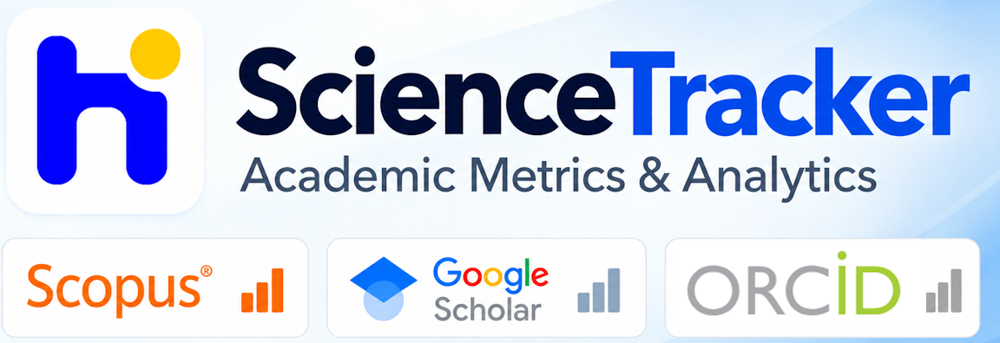

ScienceTracker
Free Windows citation and h-index tracker for Google Scholar, Scopus, OpenAlex and ORCID
Stop checking several academic profiles manually. ScienceTracker monitors supported profiles in the background and notifies you when your academic metrics change.

Download ScienceTracker for Windows
Download the latest Windows installer package for automatic metrics monitoring, research analytics, and optional Telegram notifications.
Free · Windows 10/11 (64-bit) · Local metric history and analytics cache · Scopus API key required only for Scopus data
The download is a ZIP archive containing ScienceTracker_Setup.exe. Extract the ZIP and run the installer.
First launch: the installer is currently not digitally signed, so Windows SmartScreen may show Unknown Publisher. If this happens, choose More info → Run anyway.
📖 View Full Documentation & Setup Guide (README)
🔎 ScienceTracker vs Publish or Perish
Multi-Source Monitoring
Track citation counts, publication totals, and h-index values across supported academic sources. When any monitored metric changes, ScienceTracker can show a Windows system notification and visually change the tray icon so you can immediately see that new citation, publication, or h-index activity has been detected.
Research Analytics
Analyze yearly publication/citation trends for supported sources, citation thresholds, journal-quartile distributions, and progress toward the next h-index.
Publication Insights
Review publication-level citation data, formatted bibliographic records, DOI links, and papers closest to increasing your h-index.
Windows System Tray
Runs quietly in the Windows system tray and notifies you when tracked academic metrics change.
Telegram Notifications
Optionally connect ScienceTracker to Telegram and receive notifications when citations, publication counts, h-index values, or tracked publication data change.
Automatic Updates
Built-in update support helps deliver compatibility fixes and new functionality through future releases.
Local-First Data
Metric history, analytics caches, and supporting metadata are stored locally on your Windows device.
Trust, privacy & installation
- Local-first storage: metric history, analytics caches, and supporting metadata are stored locally on your Windows device.
- No intentional collection or sale of personal user telemetry: ScienceTracker does not intentionally collect or sell personal user telemetry, passwords, or academic-service credentials.
- Telegram is optional: if Telegram notifications are enabled, the notification service stores the minimum connection information needed to associate the installation with the connected Telegram account and deliver notifications.
- Scopus API key: required only when Scopus data are enabled.
- Installer transparency: ScienceTracker is distributed through its public GitHub repository and GitHub Releases. The current installer is not digitally signed, so Windows SmartScreen may display Unknown Publisher on first launch.
Help & Frequently Asked Questions
Find step-by-step installation and profile setup instructions, Scopus API guidance, statistics and quartile explanations, Telegram notifications and troubleshooting.
Support ScienceTracker
ScienceTracker is developed and maintained independently. If you find it useful, you can support future development with a voluntary contribution.